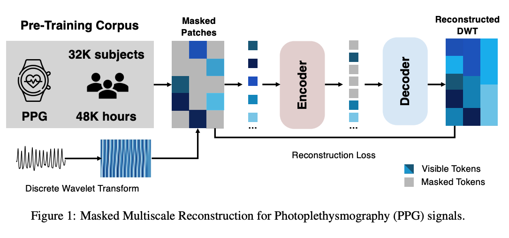
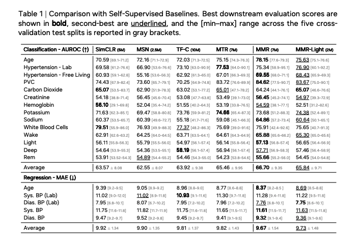
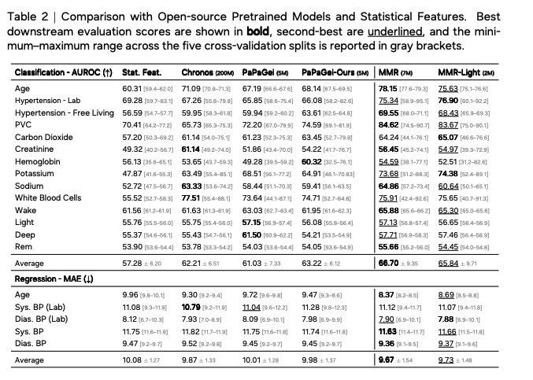

We introduce Masked Multiscale Reconstruction (MMR) for PPG representation learning, a self-supervised pretraining framework that explicitly learns from hierarchical time–frequency scales of PPG data. Raw PPG signals are decomposed into multiple wavelet bands using the Discrete Wavelet Transform (DWT), and the model is trained to reconstruct randomly masked-out coefficients across scales, forcing the transformer encoder to integrate information across temporal and spectral scales.
Concretely, we apply a level-3 Haar DWT to each 10-second PPG segment, interpolate the resulting subbands to the original signal length, and stack them into a 2-D coefficient map of shape [nsubbands, T]. The map is divided into non-overlapping patches of size (1, 25) along the temporal axis. During pretraining, 75% of patches are randomly masked, and a ViT encoder–decoder (following the MAE framework) reconstructs the missing coefficients from the visible context, minimizing MSE over the masked patches. The MMR objective exploits the hierarchical structure of the DWT: coarse approximation bands encode global trends while detail bands refine these trends at progressively higher frequencies, encouraging both top-down (coarse→fine) and bottom-up (fine→coarse) feature sharing.
We pretrain on ~17 million unlabeled 10-second PPG segments collected from ~32,000 Samsung smartwatch users in naturalistic field settings, totalling ~48K hours of data. The majority of segments are sampled at 25–100 Hz, reflecting the low-power, battery-constrained acquisition typical of free-living wearables. Each segment is bandpass-filtered, z-score normalized, and SQI-filtered (entropy + autocorrelation) to discard the most corrupted windows while retaining the variability of real-world conditions.

On 17 of 19 diverse health-related tasks, MMR improves over or matches state-of-the-art open-source PPG foundation models (PaPaGei-S/-P), time-series foundation models, and other self-supervised baselines (SimCLR, LSM). Tasks span classification (hypertension detection in lab and free-living settings, PVC detection, abnormal lab measures including HDL, LDL, platelets, potassium, sodium, triglycerides) and regression (systolic and diastolic blood pressure in both settings). Notably, MMR outperforms SimCLR and LSM, trained on the same wearable corpus, by up to +18 AUROC points on individual tasks. Despite training on noisy, low-sampling-rate field data, MMR also matches or surpasses PaPaGei models trained on clean, high-frequency (125–500 Hz) clinical signals.

Systematic ablations vary wavelet family (Haar, Daubechies-4, biorthogonal-3.5), decomposition level (3–7), and patch size (25–100). The Haar wavelet achieves the strongest PVC performance owing to its compact, sharp-discontinuity structure that emphasizes abrupt waveform changes, while smoother families (db4, bior3.5) trade detail sensitivity for smoother base functions. Deeper decompositions help classification tasks like hypertension by exposing more multi-resolution subbands; smaller patches (25) preserve fine morphological structure that larger patches (100) average out.
This work was carried out during my internship at Samsung Research America's Digital Health Lab (Biomarkers team). The umbrella effort received the SRA President Award 2025. A shorter version was accepted at the NeurIPS 2025 Workshop on Learning from Time Series for Health, and the extended paper is currently under review.
@article{thukral2026wavelet,
title = {Wavelet-Driven Masked Multiscale Reconstruction for PPG Foundation Models},
author = {Thukral, Megha and Tanade, Cyrus and Lee, Simon A. and Lee, Juhyeon and Zhou, Hao and Chun, Keum San and Gwak, Migyeong and Nathan, Viswam and Rahman, Md Mahbubur and Zhu, Li and Morshed, Mehrab Bin and Venkatraman, Subramaniam and Desai, Sharanya Arcot},
journal = {arXiv preprint arXiv:2601.12215},
year = {2026}
}